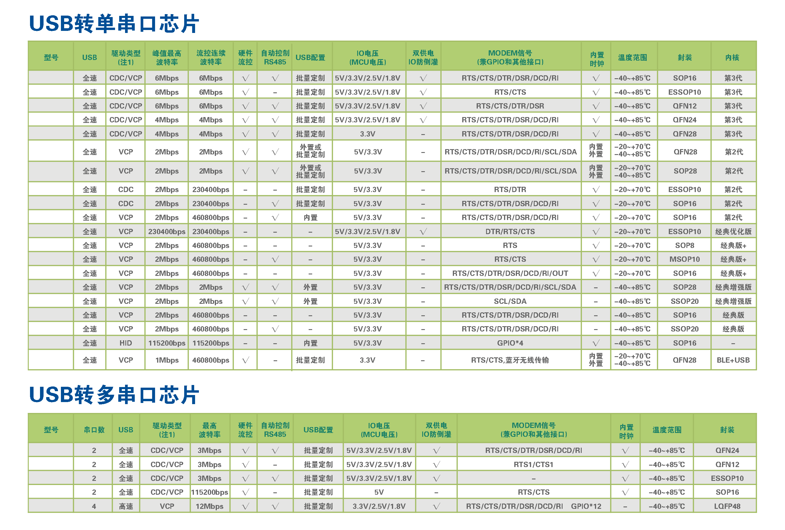
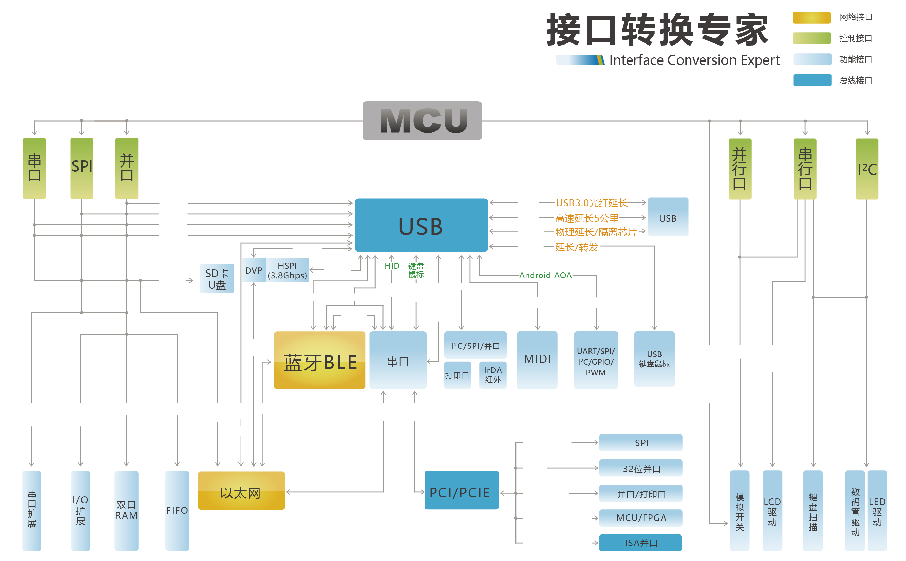

USB to TTL - CH340
USB to TTL - CH340
Introduction
在某宝买了一个 USB 转 TTL 模块，芯片型号是 CH340，芯片厂家是南京沁恒微电子股份有限公司。 产品介绍，驱动程序，技术手册和原理图页面位于USB转串口芯片:CH340。
USB to Serial Port Chips

Interface conversion expert

Linux
进入 Linux 系统，将这个 USB 转 TTL 模块插入 USB A 口后自动识别。
dmesg
$ dmesg -w
[ 160.990615] usb 2-6: new full-speed USB device number 4 using xhci_hcd
[ 161.139926] usb 2-6: New USB device found, idVendor=1a86, idProduct=7523, bcdDevice= 2.64
[ 161.139932] usb 2-6: New USB device strings: Mfr=0, Product=2, SerialNumber=0
[ 161.139934] usb 2-6: Product: USB Serial
[ 161.165466] usbcore: registered new interface driver usbserial_generic
[ 161.165513] usbserial: USB Serial support registered for generic
[ 161.167670] usbcore: registered new interface driver ch341
[ 161.167684] usbserial: USB Serial support registered for ch341-uart
[ 161.167703] ch341 2-6:1.0: ch341-uart converter detected
[ 161.168611] usb 2-6: ch341-uart converter now attached to ttyUSB0
lsusb
$ lsusb
Bus 001 Device 002: ID 8087:8000 Intel Corp.
Bus 001 Device 001: ID 1d6b:0002 Linux Foundation 2.0 root hub
Bus 003 Device 001: ID 1d6b:0003 Linux Foundation 3.0 root hub
Bus 002 Device 004: ID 1a86:7523 QinHeng Electronics HL-340 USB-Serial adapter
Bus 002 Device 003: ID 0c45:64d2 Microdia Integrated Webcam
Bus 002 Device 002: ID 1d57:0008 Xenta 2.4G Wireless Optical Mouse
Bus 002 Device 001: ID 1d6b:0002 Linux Foundation 2.0 root hub
udev rules
udev /dev/ttyCH340
KERNEL=="ttyUSB*",\
ATTRS{idVendor}=="1a86",\
ATTRS{idProduct}=="7523",\
GROUP="dialout",\
MODE="0660",\
RUN+="/bin/ln -sf %k /dev/ttyCH340"
terminal emulation program
$ sudo screen /dev/ttyUSB0 115200
$ sudo busybox microcom -t 5000 -s 115200 -X /dev/ttyUSB0
$ sudo tio -b 115200 -t /dev/ttyUSB0
$ sudo picocom -b 115200 /dev/ttyUSB0
$ sudo minicom -b 115200 -8 -D /dev/ttyUSB0
pySerial
$ sudo apt-get install -y python3-serial
$ sudo python3 -m serial.tools.list_ports
/dev/ttyUSB0
1 ports found
$ sudo python3
Python 3.8.5 (default, Jul 28 2020, 12:59:40)
[GCC 9.3.0] on linux
Type "help", "copyright", "credits" or "license" for more information.
>>> import serial
>>>
>>> ser = serial.Serial('/dev/ttyUSB0', 115200)
>>> ser.timeout = 3
>>> ser.write(b'xyz123abc')
9
>>> ser.read(8)
b'xyz123ab'
>>> ser.read(8)
b'c'
>>>
import serial
from serial.tools import list_ports
ports = list_ports.comports()
for port in ports:
print(port)
ser = serial.Serial('/dev/ttyUSB0', 115200)
ser.timeout = 3
ser.write(b'xyz123abc')
ser.read(8)
Windows
驱动程序
在USB转串口芯片:CH340页面，厂家提供了 WHQL 驱动下载，支持主流 Windows 系统。
进入 Windows 系统，将这个 USB 转 TTL 模块插入 USB A 口，安装厂家提供的驱动程序。然后在设备管理器中的**端口(COM 和 LPT)**设备分类下，可以看到设备 **USB-SERIAL CH340 (COM11)**。
查看这个设备的属性，可以发现驱动程序是由 Microsoft Windows Hardware Compatibility Publisher 签名，提供商是 wch.cn，驱动程序日期是 2019/1/30，版本是 3.5.2019.1，驱动程序文件是 C:\Windows\System32\Drivers\CH341S64.SYS。
设备信息
在设备的详细信息页面中，可以看到如下在 USB-IF 注册的属性：
QinHeng Electronics HL-340 USB-Serial adapter
USB-SERIAL CH340
USB\VID_1A86&PID_7523\5&3B489C26&0&6
USB\VID_1A86&PID_7523&REV_0264
USB\VID_1A86&PID_7523
pySerial
- https://github.com/pyserial/pyserial
- https://pythonhosted.org/pyserial/
- https://pyserial.readthedocs.io/
PS C:\> python -m pip install pyserial
PS C:\> python -m serial.tools.list_ports
COM11
1 ports found
PS C:\> python -m serial.tools.list_ports -v
COM11
desc: USB-SERIAL CH340 (COM11)
hwid: USB VID:PID=1A86:7523 SER=5 LOCATION=1-6
1 ports found
PS C:\> python -m serial.tools.miniterm -h
PS C:\> python -m serial.tools.miniterm COM11 115200
PS C:\> python
Python 3.8.6 (tags/v3.8.6:db45529, Sep 23 2020, 15:52:53) [MSC v.1927 64 bit (AMD64)] on win32
Type "help", "copyright", "credits" or "license" for more information.
>>> import serial
>>> from serial.tools import list_ports
>>> ports = list_ports.comports()
>>> for port in ports:
... print(port)
...
COM11 - USB-SERIAL CH340 (COM11)
>>> with serial.Serial('COM11', 19200, timeout=1) as ser:
... ser.write(b'hello')
... ser.read(5)
...
5
b'hello'
>>>
import serial
from serial.tools import list_ports
ports = list_ports.comports()
for port in ports:
print(port)
with serial.Serial('COM11', 19200, timeout=1) as ser:
ser.write(b'hello')
ser.read(5)